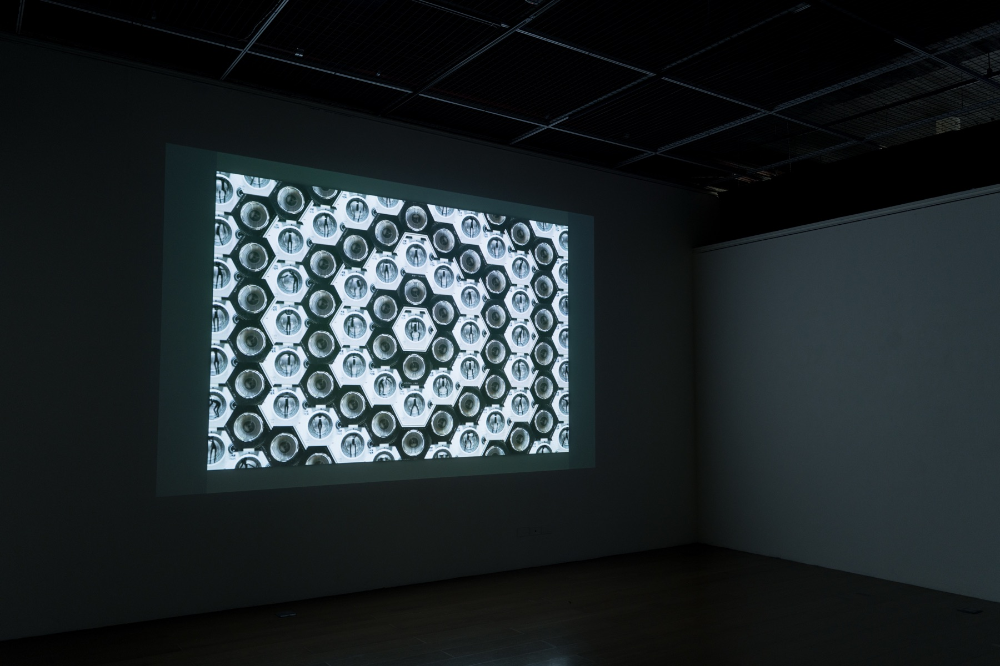
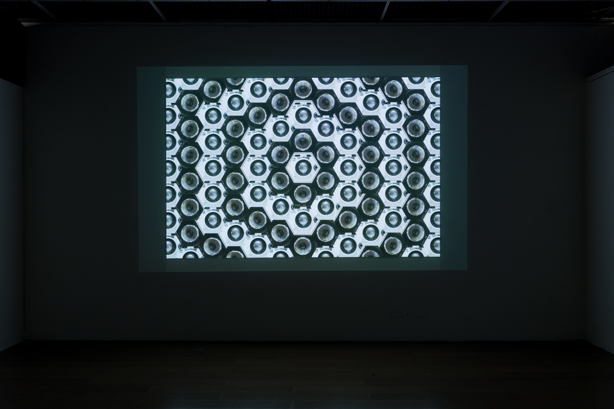
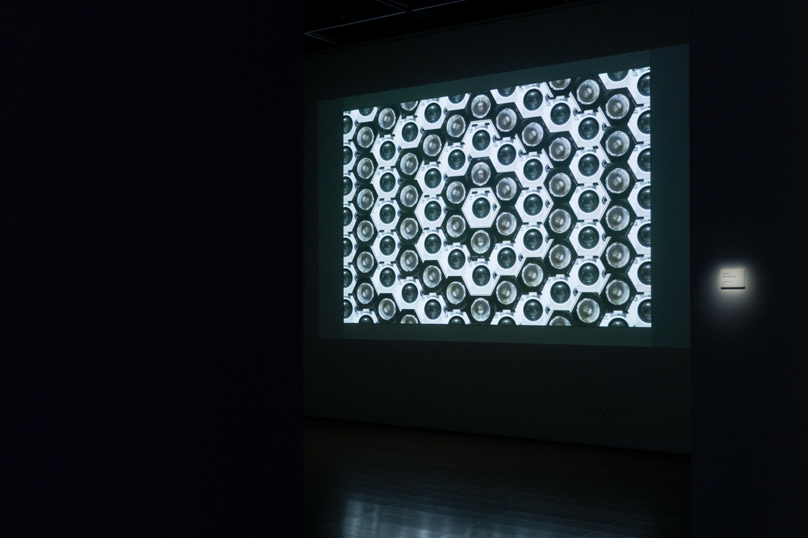
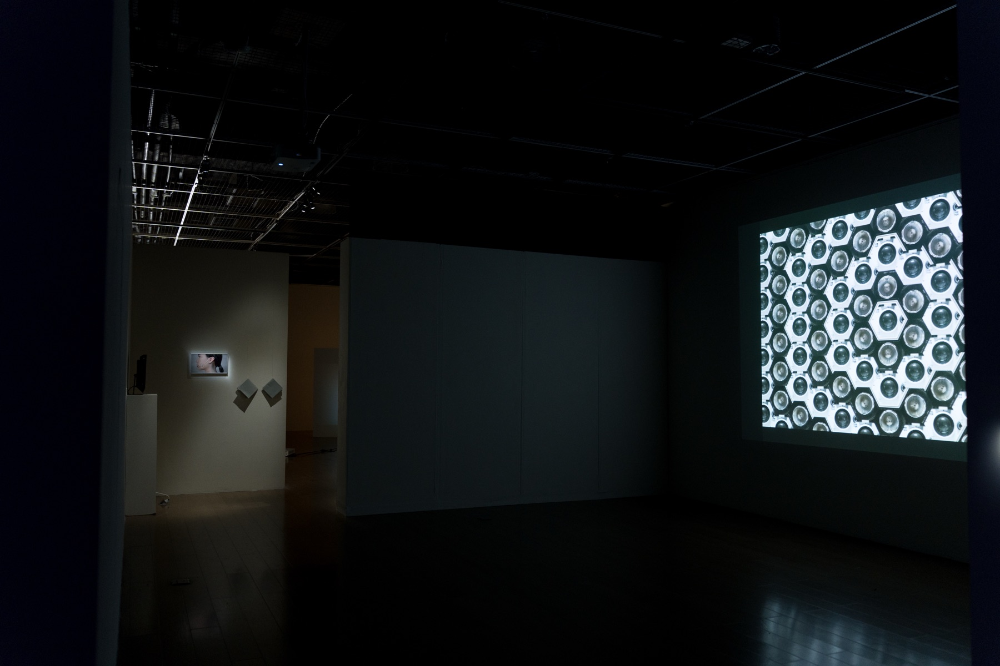
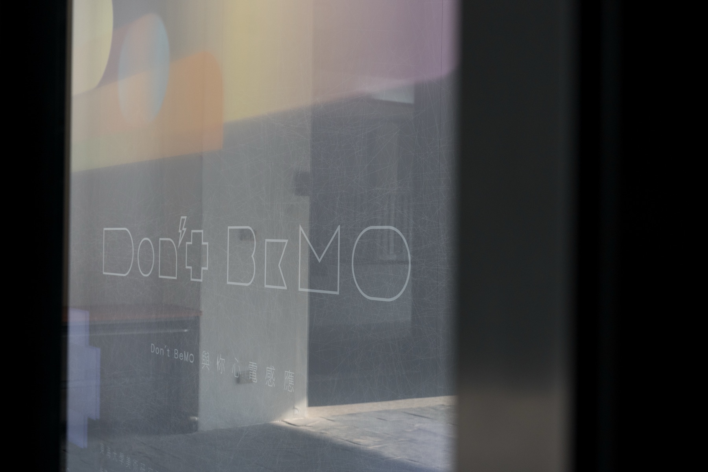

Group Exhibition — 2023
DON’T BeMO與你心電感應 · Telepathy with You
정보화 시대의 외로움과 기술의 관계를 묻는 전시 — ‘자의식을 가진 기술은 사람과 깊이 있는 교감을 나눌 수 있을까?’
An exhibition on loneliness and technology in the information age — ‘can technology with self-awareness communicate deeply with people?’
‘DON’T BeMO(與你心電感應, ‘당신과의 텔레파시’)’는 정보 혁명 이후 점점 차가워지고 멀어지는 사람 사이의 관계에서 출발합니다. 우리는 외로움을 달래기 위해 반려동물을, 불을 켜 둔 채 잠드는 밤을, 그리고 무엇보다 전자기기를 곁에 둡니다. 스마트폰과 소셜 미디어는 소통을 쉽게 만들고 거리를 좁혀 주는 듯하지만, 만나서도 여전히 온라인 세계에 잠겨 실제 대화를 놓치는 이른바 ‘기술적 무관심(technical indifference)’을 낳기도 합니다.
이 전시는 사람과 기술의 잦은 상호작용을 통해, 기술을 매개로 한 더 깊은 소통의 가능성과 그 미래를 추측합니다. ‘소외와 외로움’, ‘상상의 응답’, ‘기술의 자의식’, ‘상호작용과 소통’, ‘이해와 동반’이라는 다섯 개의 소주제로 구성되며, Slitscope의 ‘Cosmos Ⅰ’은 그중 네 번째 소주제 ‘상호작용과 소통(Interaction and Communication)’에 놓여, 자의식을 지닌 기술이 사람과 깊이 있는 상호작용과 소통을 만들어낼 수 있는지를 탐구합니다.
‘DON’T BeMO (與你心電感應, “telepathy with you”)’ begins with the relationships that have grown colder and more distant since the information revolution. To relieve loneliness we turn to pets, to nights spent with the lights on, and above all to electronic devices. Smartphones and social software seem to ease communication and shorten distances, yet they can also breed a “technical indifference” — where, even when we meet, we remain immersed in the online world and miss real connection.
Through the frequent interaction between people and technology, the exhibition speculates on the possibility of deeper communication mediated by technology, and on its futures. It unfolds across five sub-themes — Alienation and Loneliness, Response of Imagination, Self-Awareness of Technology, Interaction and Communication, and Understanding and Companionship. Slitscope’s ‘Cosmos Ⅰ’ sits within the fourth, ‘Interaction and Communication’, exploring whether technology with self-awareness can produce in-depth interaction and communication with people.
- 소주제
- Sub-theme
- 4. 상호작용과 소통 (Interaction and Communication)
- 4. Interaction and Communication
- 기획
- Curated by
- 둥하이대학교 미술연구소 제11회 인턴 큐레이팅 과정 (지도: 張惠蘭 · 沈裕昌 교수)
- 11th Internship Curatorial Course, Tunghai University Fine Arts Research Institute (advisors: Prof. Zhang Huilan & Prof. Shen Yuchang)
- 함께 참여
- With
- Yang Yaqing · Xiong Pinxun · Yao Zhonghan · Ren Jingjia · Wu Qiyu · Zhang Jiazhe · Slitscope · Huang Yi Studio · Wen Minyu
Presented Work
Cosmos Ⅰ
AI, digital media, 2’30” · archival pigment print, 1900×1300mm · 2020
AI, digital media, 2’30” · archival pigment print, 1900×1300mm · 2020
‘살아있는 그림’을 뜻하는 Tableau Vivant 연작의 하나로, 창작과 소멸의 순간을 동시에 포착하는 사진이라는 매체를 기반으로 합니다. 카메라의 시선 속 가상의 피사체는 존재론적 미장아빔(mise en abyme)의 춤을 반복합니다. AI가 생성한 가상의 무용수는 카메라 안과 밖에 동시에 존재하며, 허구이자 잠재태로서 경계를 지우기 위해 분투합니다. 벌집처럼 반복되는 격자 속 무수한 무용수들의 움직임은, 자의식을 지닌 기술과 사람 사이의 교감이라는 전시의 물음과 공명합니다.
Part of the Tableau Vivant series, meaning ‘living picture.’ The work is based on the medium of photography, which captures moments of creation and destruction simultaneously, and the virtual subject in the camera’s eye repeats the dance of ontological mise en abyme. The AI-generated virtual dancer is simultaneously inside and outside the camera — both fiction and potential, struggling to erase boundaries. Across a honeycomb grid of countless repeating dancers, the work resonates with the exhibition’s question of communion between self-aware technology and people.
- 연작
- Series
- Tableau Vivant
- 제작
- By
- Slitscope — 2018년 미디어 아티스트·연출가 김제민과 AI 연구자 김근형이 결성한 미디어 아트 그룹. 그룹명은 파동·입자의 이중성을 증명한 ‘이중 슬릿 실험’에서 따왔습니다.
- Slitscope — a media art group formed in 2018 by media artist/director Kim Jae Min and AI researcher Kim KeunHyoung. Its name is drawn from the double-slit experiment that proved wave-particle duality.
Tunghai University Art Center, Taichung, Taiwan — 2023



